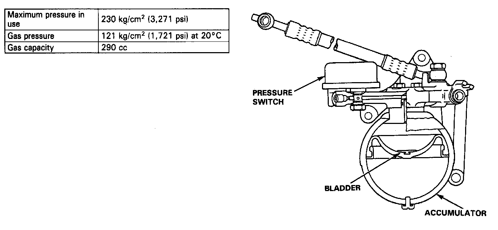
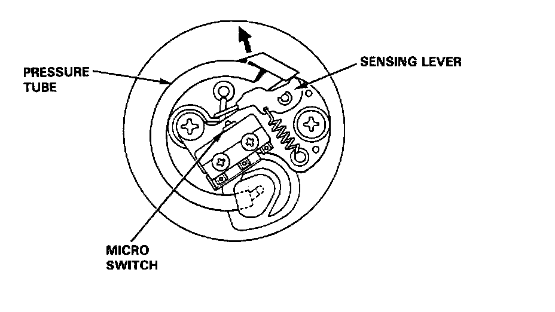

Brake Fluid Accumulator: Description and Operation

Accumulator
This is a gas-and-spring type accumulator which stores the brake fluid under high pressure from the pump in the power unit. When the ALB system functions, the accumulator supplies high-pressure brake fluid to the control fluid chamber of the modulator through the inlet solenoid valve in the modulator unit.
Pressure Switch

The pressure switch monitors the pressure of the accumulator. The switch transmits a signal to the control unit when the pressure drops below the prescribed value, and the control unit then turns on the pump motor. If the pressure does not reach the prescribed value in 120 seconds, the control unit turns the ALB system off and the ANTI LOCK warning light ON.
As the pressure in the accumulator increases, the end of the pressurized tube is forced outward, pushing the sensing lever, and tripping the micro switch, which sends a signal to the control unit to turn the pump off. When the pressure in the accumulator drops normally as a result of the action of the ALB system, the reverse of the above-mentioned operation takes place.